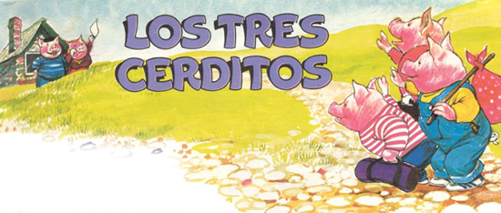
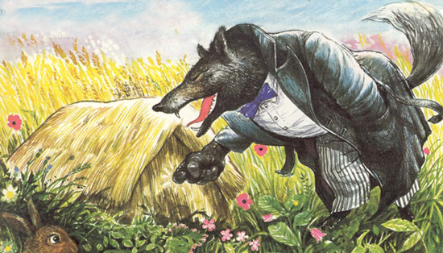

Los 3 cerditos

Erase una vez tres cerditos que vivían en una casita con sus padres. Pero a medida que iban creciendo, parecía que la casa se volvía pequeña para darles cabida a todos.
—¡No tenemos sitio suficiente!
—Exclamó un día su madre— ¡Debéis marcharos y abriros camino en la vida por vuestros propios medios!
—Yo me construiré una casa para mí solo —dijo el primer cerdito.
—¡Yo también! —dijo el segundo.
—¡Yo también! —dijo el tercero.
El primer cerdito se construyó una casa de paja. El segundo, una casa de estacas. Y el tercero, una casa de piedra. Le llevó mucho más tiempo construirla que a sus hermanos, pero era más acogedora y confortable.
Un día, al poco de haber terminado el primer cerdito su casa de paja, llamaron a la puerta.
—Cerdito, cerdito, por favor, déjame entrar -dijo un gran lobo negro, que pensaba comerse unas ricas chuletas de cerdo para almorzar.
—No, no, ¡ni hablar!
—dijo el primer cerdito, echando el cerrojo a la puerta de paja.
—¡Entonces, soplaré y soplaré hasta derribar tu casa!
—gruñó el lobo.

Y eso fue exactamente lo que hizo La casita de paja voló por los aires como si se tratara de un frágil pajar, y el primer cerdito fue corriendo V chillando a casa del segundo cerdito.
El lobo le siguió jadeando y llegó a la puerta de la casa de estacas.
—Cerditos, cerditos, por favor, dejadme entrar —dijo el lobo a través del buzón, pensando en el jugoso pedazo de tocino que se merendaría.
—No, no, ¡ni hablar!
—chilló el segundo cerdito, y echó el cerrojo a la puerta de estacas.
—¡Entonces, soplaré y soplaré hasta derribar tu casa!
Y eso fue exactamente lo que hizo. La casita de estacas voló por los aires como si se tratara de un vulgar juego de artificio y los dos cerditos huyeron corriendo a la casa de piedra de su hermano.
El lobo les siguió jadeando y gruñó a través del buzón de la casa del tercer cerdito:
-Cerditos, cerditos, por favor, dejadme entrar -y el lobo pensaba en el sabroso jamón que tomaría para cenar.
-No, no, ¡ni hablar! —chilló el tercer cerdito, y echó el cerrojo a la gran puerta de roble de su casa de piedra.
El lobo soltó una carcajada y exclamó: -¡Entonces, soplaré y soplaré hasta derribar tu casa!
Y eso fue exactamente lo que intentó hacer. Sopló y sopló. Pero por más que soplaba, no logró mover ni una piedra de la casita.
—¡Caramba con este cerdito! —gruñó el hambriento lobo-. Cree estar a salvo en su casa de piedra, pero hay más de un medio para entrar en ella.
Buscó una escalera y trepó al tejado de la casa de piedra.
"Tres cerditos para cenar", pensaba. "Qué ricos estarán." Y empezó a bajar deslizándose por la chimenea.
Los tres cerditos oían las uñas del lobo arañando el tejado.
—¡Dios mío!
—exclamaron el primer y el segundo cerditos
—. ¿Qué podemos hacer?
Pero el tercer cerdito, que estaba ocupado preparando la sopa en una olla sobre el hogar, avivó el fuego y se puso a escuchar tranquilamente el borboteo de la sopa que hervía.
El lobo bajó deslizándose por la chimenea y ¡PLAF! cayó dentro de la olla. Entonces se oyó un grito muy fuerte: era el fin del malvado lobo.